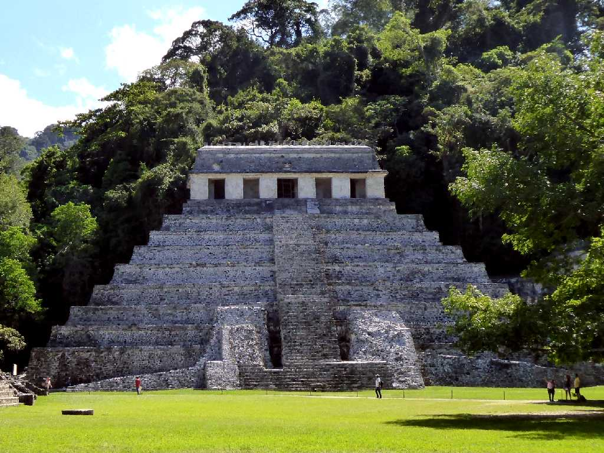
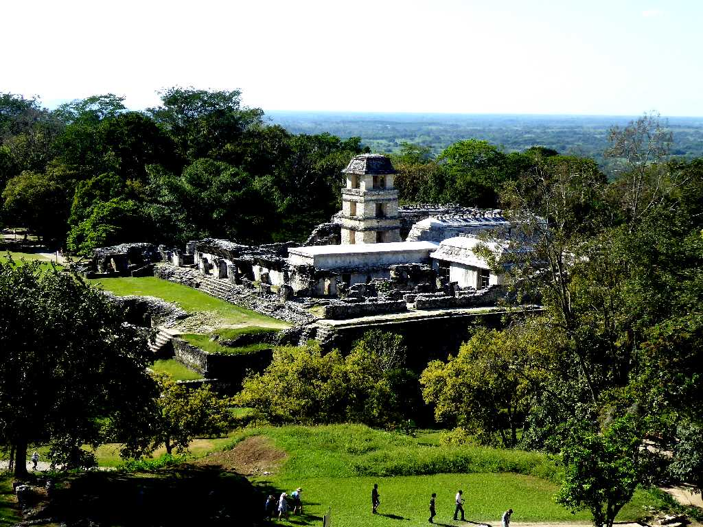
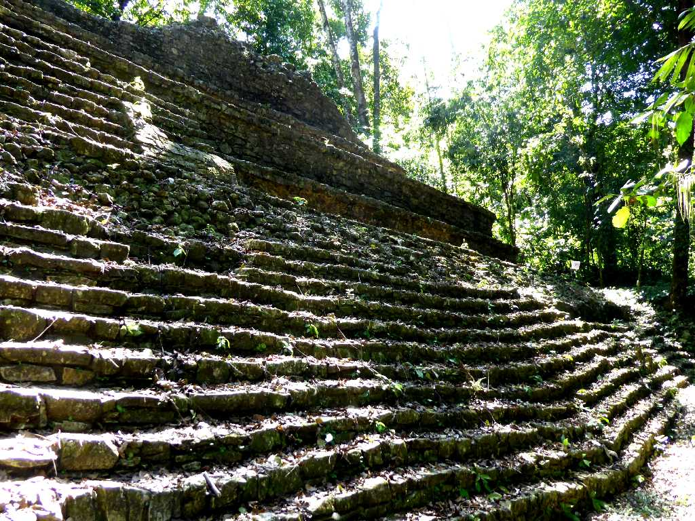
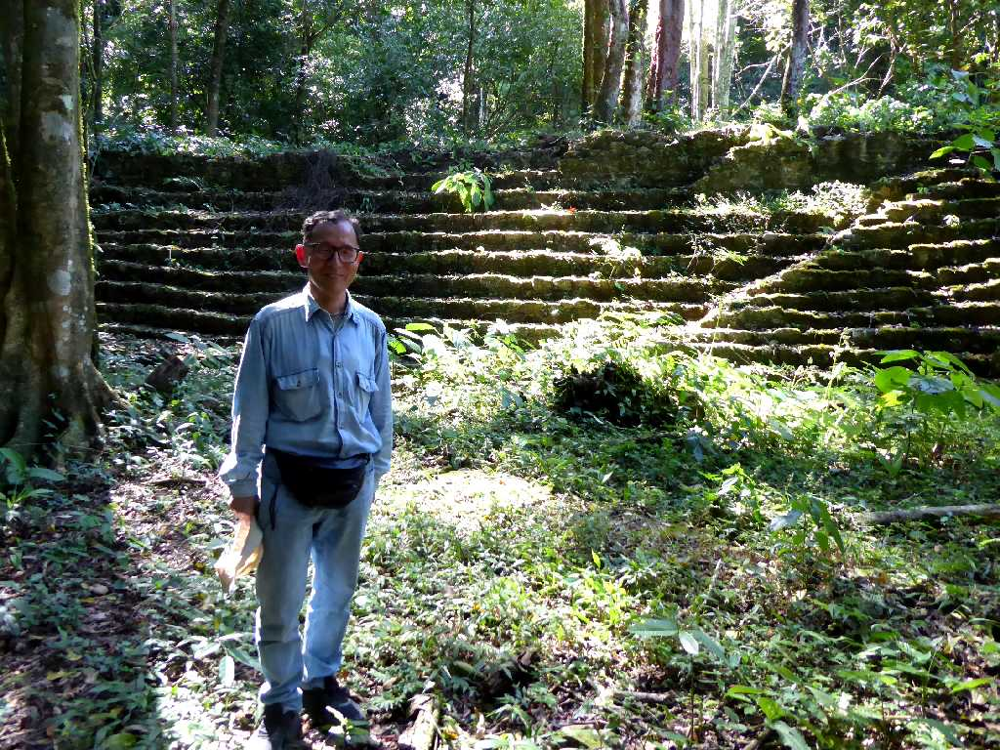
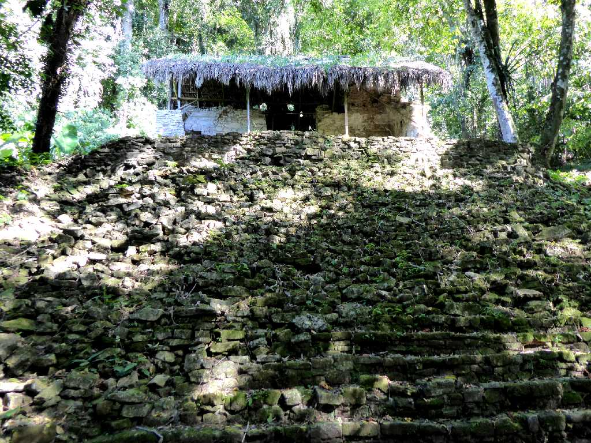

Templo de las Inscripciones (Templo 13) Palenque
多くの碑文が残るパレンケの碑文の神殿の墓室からはパカル王の遺体が発見された
Máscara de Rey Pakal Palenque Mayan Museo Nacional de Antropología
パカル王のデスマスク

Palacio Palenque

Templo 18 Palenque

March 17 2020 Templo 18 Palenque

Templo 19 Palenque

Glifos Mayas Templo 19 Palenque